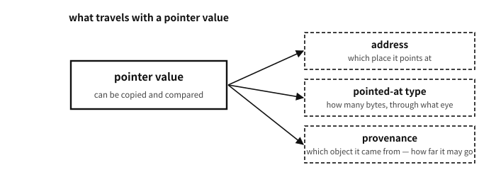

36 Objects, addresses, pointers
What to know first
Looking back
Chapter 34 said “the proper method for a function to change a variable outside is to copy and pass the variable’s address as a value.” Unfolding that with chapter 3’s knowledge — on what grounds can an address be “copied as a value”?
A. On the ground that an address is a value that can be handled like a number (chapter 3) — a locker number can be written down elsewhere, copied and handed over. In C the type of that “variable holding an address” is the pointer. What we learn today is not a new concept but dressing chapter 3’s idea in syntax.
One thing should be nailed down in advance. That it can be copied and compared does not make a pointer an integer. C keeps pointers as a different kind of value from integers and attaches a contract to them: the type pointed at, and the provenance — which object it came from. Chapter 4’s remark that “the same number need not be the same pointer” begins here, and chapter 38 finishes it properly under the name of provenance.
The need for this chapter, and its context
By the end of this chapter
&, * and sizeof — settling every credit carried since chapter 26.The questions this chapter answers
- Then are “variable” and “object” the same word?
- Can
&be put on any object? - What can a pointer point at — only objects?
- So should every variable holding a size just be a
size_t? - How large is a pointer variable itself — what is
sizeof p? - Printing a variable’s address would be interesting — why did the demonstration not print address values?
- Is “an address is an integer” wrong, then?
- Arguments are promoted on their way into a variadic call — doesn’t a pointer become
void *anyway? - Then why not always use
PRIxPTRinstead of%p? - Then why can
void *be used as “the container that holds any pointer”?
36.1 Three words first — object, address, pointer#
This chapter’s title is three words. We have passed all three many times already — “address” as chapter 3’s locker number, “object” whenever the standard was quoted, “pointer” as a promise of “later”. But none of them has ever been defined. Learn the syntax (* and &) first and the symbols soon come easily to the hand, while what they handle stays blurred. A good part of the pointer’s reputation for difficulty actually comes from that blur.
So this chapter changes the order. We define the three words one at a time, in the sense the standard uses, draw them, check them with a small program, and only then move to the syntax. There is no need to hurry. Get through this section properly and the remaining ten chapters of this part become a good deal easier.
| Word | One-line definition | In the locker corridor |
|---|---|---|
| object | a region of memory that holds a value | a few lockers in a row — what is inside them is the value |
| address | where an object sits — the number of its first byte | the number of the first of those lockers |
| pointer | the type that holds an address as a value, such a value, and a variable holding it | a slip with a locker number written on it — and the slip itself sits in some locker |
Table 36.1 — What an object, an address and a pointer each are — this section in brief
No need to memorise the table. We unfold it line by line below.
36.1.1 Object — a region of memory that holds a value#
The standard defines an object like this.
object: region of data storage in the execution environment, the contents of which can represent values.
(Note: when referenced, an object can be interpreted as having a particular type.)
— C23 §3.15
There is not one hard word in it, and yet it does not land at once. Cut it into three pieces.
- “Region of data storage” — a place in memory. In chapter 3’s locker corridor it is a run of adjacent lockers, one or more. One
inttakes four lockers (4 bytes) on this book’s machine, onedoubletakes eight. - “In the execution environment” — it exists while the program runs. Not the letters in the source code, but a place really set up in memory when the program runs.
- “The contents of which can represent values” — the bits in those lockers can be read as some value. The 32 bits in four lockers read as the integer
55, say.
The note matters too. The bits in a locker mean nothing by themselves (chapter 3 — “what knows about the lump is the side doing the reading”). Read the same four lockers as an int and you get an integer; read them as a float and you get a real number. What an object is read as is decided by the type of the expression that reaches it. Later this note becomes the answer to why pointer types are needed.
So when you write int n = 55;, this is what happens. A four-byte region is set up in memory, bits representing 55 are put in it, and the region is given the name n. That region is the object. Picture it placed at address 200 on this book’s machine (a little-endian x86-64).
37 | 00 | 00 | 00 |
200 | 201 | 202 | 203 |
Figure 36.1 — The object n — four lockers from address 200, holding 55 (hex 37) in little-endian order
The four boxes with heavy borders are one object. Each box is a byte, and the four together make one int object. (Address 200 was chosen for the picture. The real address changes from run to run — a question later in this chapter shows why.)
A common misconception. “An object — as in object-oriented programming?”
No. Only the name is the same. The object of C++, Java or Python is “data bundled with the methods that work on it”, but C’s object has no methods and no class. C’s object is far plainer — a region of memory that can hold a value, and that is all.
So in C a single int is an object, and a single char is an object. If an object-oriented sense makes you ask “how is an int an object?”, remember that the word is being used in another sense. (C’s usage is in fact the older one, and the C++ standard inherited this plain meaning too.)
36.1.2 What is an object and what is not#
With the definition in hand, let us sort out what is an object and what is not. A few are surprising at first.
| What | An object? | Why |
|---|---|---|
n declared by int n; | yes | a named 4-byte region |
the array int a[3]; and its element a[1] | both are | the whole array is a 12-byte object, and each element is a 4-byte object (chapter 39) |
| a structure and its members | both are | smaller objects inside a larger one (chapter 47) |
the string literal "hi" | yes — with no name | a char array that lasts the whole run of the program (chapter 43) |
the region malloc hands out | yes — with no name | a region reached only by its address (chapter 46) |
3, the result of n + 1 | no — a value | just a computed number, with no place that holds it |
the function main | no | it is somewhere in memory, but the standard keeps functions apart from objects (chapter 27) |
the type int, a macro, an enumeration constant | no | names at compile time, not regions during the run |
Table 36.2 — What is an object and what is not
Two things deserve a look.
First, an object need not have a name. String literals and malloc’s regions exist without one. With no name they can be reached only by their address, and what holds that address is the pointer. Without pointers there would be no way to touch a nameless object — the shortest answer to why pointers are needed.
Second, a value and an object are different. 3 is a value, not an object. n is an object, and right now it may hold 3. It is the relation of a box to the thing in the box. Blur it and meaningless questions appear, such as “what is the address of 3?” — there is no place holding it, so there is no address.
Q. Then are “variable” and “object” the same word?
A. Nearly, but not quite. In everyday use a “variable” is a named object. That is what int n; declares — one object, and one name to call it by.
What is interesting is that the C standard has no definition of “variable”. What it defines is the object (the region) and the identifier (the name), and a declaration ties the two together. The table above shows why the standard does not bother with “variable” — there are nameless objects. malloc’s region would be odd to call a variable, but it is certainly an object.
This book too says “variable” when speaking easily. But when nameless regions must be included, or when a rule of the standard must be carried over exactly, it says “object”.
36.1.3 What every object has#
Some things always come with an object. The eleven chapters of this part are, in effect, chapters that dig into this list one item at a time.
| Property | What it is | Where it is covered |
|---|---|---|
| size | how many bytes it occupies — ask with sizeof | this chapter |
| place | where in memory it sits — that is the address | this chapter |
| value | what its bytes represent right now | chapter 27 |
| type | what to read those bytes as | chapter 14 (effective type) |
| alignment | the multiple its address must fall on | chapters 4 and 38 |
| lifetime | when it comes into being and when it disappears | chapter 45 |
Table 36.3 — What comes with every object
Remember the last row in particular, lifetime. Objects do not last forever. A variable inside a function disappears when that function ends. A pointer still holding the place of a vanished object is one of C’s famous accidents, and its story is told in chapter 45.
36.1.4 A value or a place — the lvalue view#
Read n = n + 1; slowly. The same n appears twice and does different work.
- The
non the right is a value. “Fetch the number now in n.” One is added to it. - The
non the left is a place. “Put it into the region called n.” What it holds is of no interest.
The standard has a name for this distinction. An expression that can designate an object is called an lvalue (§6.3.2.1p1) — the word met once in chapter 35, on the left of an assignment. n is an lvalue. So is a[1]. But n + 1 is not — it is just a computed value and designates no region. So n + 1 = 5; is a compile error: there is no place to put anything.
Then how does the n on the right become a value? The standard’s rule: in most places an lvalue is automatically turned into “the value held in that object” (the same clause, p2: lvalue conversion). There are a few places where it is not turned — the left of an assignment, the operand of ++ and --, the operand of sizeof, and the operand of &, which we are about to meet. In those contexts an expression stays a “place” rather than a “value”.
The other side — what is used as a value, like the n on the right, and what is nothing but a value from the start, like n + 1 — is commonly called an rvalue. But that word is customary usage. The standard only notes in a footnote that “what is sometimes called ‘rvalue’ is in this document described as the ‘value of an expression’” (§6.3.2.1, footnote) and does not use the word itself. The two names come from the left and right of an assignment, but the meaning matters more than the names — an lvalue is an expression that designates a place; an rvalue is just a value. (Some lvalues cannot stand on the left of an assignment, such as a const variable — the “modifiable lvalue” of chapter 52.)
That gives the next section’s conclusion in advance. & is an operator that asks for a place, so it can be used only on things that have one (lvalues). &n works; &3 and &(n + 1) do not.
36.1.5 Address — where an object sits#
Memory is a long line of bytes, each with a number (chapter 3). The standard has the same picture: it defines the byte as an “addressable unit of data storage” and notes that the address of each individual byte of an object can be expressed uniquely (§3.6).
Then what is an object’s address? An object spans several bytes, but it has one address. The answer is its first byte, the one with the lowest address. The n above occupies lockers 200, 201, 202 and 203, and n’s address is 200. The standard says the same: convert a pointer to an object into a character pointer and “the result points to the lowest addressed byte of the object” (§6.3.2.3p7).
An important question arises here. Address 200 alone does not tell you the whole object. Is what starts at 200 a 1-byte char, a 4-byte int, an 8-byte double? The address gives only the starting point; it says nothing about how many lockers to read, or how. The definition’s note — “interpreted as having a particular type” — comes back here. Only when a type comes with the address can the object at that place be read.
C ties the pair together from the start. Look at the definition of the unary & operator.
The unary & operator yields the address of its operand. If the operand has type “type”, the result has type “pointer to type”.
— C23 §6.5.4.2
So &n is not the bare number 200. It is the value “there is an int at address 200”, and the type of that value is int *. In C the way to get hold of an address always goes through a value with a type attached. From here on, when this book says “address” it means the number at the machine’s level, and when it says “pointer value” it means that number with a type (and, as chapter 38 shows, a provenance) attached — a value at the language’s level.
Q. Can & be put on any object?
A. Nearly. It needs an lvalue that designates an object — a variable, an array element, a structure member, something like *p. There are two exceptions: a variable declared register, and a bit-field (a structure member a few bits wide), whose addresses cannot be taken (a constraint of §6.5.4.2). The first is a promise — “it may live in a register, so I will not ask for its address” — and the second is a fragment that need not even start on a byte boundary, so no address can point at it. Both are rare in everyday code.
And & can be put on a function as well. A function is not an object, but it is code sitting somewhere in memory, so it has an address. What you get that way is a function pointer (chapter 68).
36.1.6 Pointer — holding an address as a value#
Now the last word. The standard defines the pointer as a type.
A pointer type may be derived from a function type or an object type, called the referenced type. A pointer type describes an object whose value provides a reference to an entity of the referenced type.
— C23 §6.2.5
In plain words: there is a type “pointer to int”, and the value held in an object of that type refers to some int. From the type int a new type int * is derived — from double, double *; from char, char *.
Here is the thing that confuses beginners most. The single word “pointer” means three things.
| Use | What it is | Example |
|---|---|---|
| pointer type | a type that says what it points at | int *, char *, double * |
| pointer value | one value of that type — an address with a type attached | the result of &n |
| pointer object (pointer variable) | an object that holds a pointer value | the p of int *p; |
Table 36.4 — Three uses of the word “pointer”
“p is a pointer” usually means the third; “&n is a pointer” means the second. The context usually tells them apart, but when confused, come back to this table and ask: “is this about a type, a value, or the box holding the value?”
And here is the most important sentence of this section. A pointer variable is an object too. Like any other variable it has its own region in memory, a size (8 bytes on this book’s machine) and its own address. It is just that the value in that region is the address of another object. After int *p = &n; memory looks like this (say p sits at address 208).
C8 | 00 | 00 | 00 | 00 | 00 | 00 | 00 |
208 | 209 | 210 | 211 | 212 | 213 | 214 | 215 |
Figure 36.2 — The object p — eight lockers from address 208. The value held is 200 (hex C8): n’s address
Put it beside the picture of n. Address 200 holds the value 55, and address 208 holds the value 200. Both are just bits, and both are just objects. The only difference is the eye that reads them — since p’s type is int *, C reads those eight bytes as “the place where an int sits”. That is all “p points at n” means: the value held in p is n’s address, and there is no mystery beyond that.
In chapter 3’s locker picture it comes out neatly.
nis four lockers in a row from number 200, holding 55.&nis a slip reading “locker 200, anintis there”.pis another locker (eight of them from 208) where that slip is kept.*pmeans “take out the slip in p, read it, and go to the locker written on it”.
The slip sits in some locker too, so that locker has a number as well, and a slip can be made with that number on it — &p, whose type is int ** (“pointer to int *”). A pointer to a pointer sounds dizzying at first, but think of it as a slip bearing the number of the locker where a slip is kept and there is nothing strange about it.
A common misconception. “A pointer is an address”
Only half right. A pointer value is an address with a type attached, and a pointer variable is an object holding such a value. Remember only “a pointer is an address” and you miss two things.
One is the type. At the same address 200, an int * reads four bytes as an integer and a char * reads one byte as a character. A different type means different work at the same address.
The other is the pointer variable’s own place. p, *p and &p are three different things — p is the number written on the slip (200), *p is what is in the locker of that number (55), and &p is the number of the locker where the slip is kept (208). Mixing these three up is the commonest beginner’s mistake with pointers.
36.1.7 The three words at once — a demonstration#
Definitions in words fade quickly. Check them one at a time with a small program. It does not print addresses themselves (they change from run to run — a question later in this chapter covers that). It prints sizes, equalities and changes of value instead.
examples-en/pointers/objects.c
#include <stdio.h>
int main(void)
{
int n = 55; /* one object: name n, value 55 */
int *p = &n; /* another object: value n's address */
puts("[1] every object has a size");
printf("sizeof n = %zu bytes\n", sizeof n);
printf("sizeof p = %zu bytes\n", sizeof p);
puts("\n[2] p holds n's address; p itself lives somewhere else");
printf("p == &n : %d\n", p == &n);
printf("&p == &n : %d\n", (void *)&p == (void *)&n); /* two objects */
puts("\n[3] two roads to one object: the name n and *p");
*p = 77; /* go to the address written in p and write */
printf("after *p = 77 : n = %d\n", n);
n = 99; /* write by the name --- the same object */
printf("after n = 99 : *p = %d\n", *p);
puts("\n[4] a pointer is a variable: it can be pointed elsewhere");
int m = 1;
p = &m; /* now p points at m */
*p = 2;
printf("after p = &m; *p = 2 : n = %d, m = %d\n", n, m);
puts("\n[5] a pointer is an object too, so it has an address");
int **pp = &p; /* a pointer to "a pointer to int" */
**pp = 3; /* pp → p → m */
printf("after **pp = 3 : m = %d\n", m);
return 0;
}
Output
[1] every object has a size
sizeof n = 4 bytes
sizeof p = 8 bytes
[2] p holds n's address; p itself lives somewhere else
p == &n : 1
&p == &n : 0
[3] two roads to one object: the name n and *p
after *p = 77 : n = 77
after n = 99 : *p = 99
[4] a pointer is a variable: it can be pointed elsewhere
after p = &m; *p = 2 : n = 99, m = 2
[5] a pointer is an object too, so it has an address
after **pp = 3 : m = 3
Read the five pieces in turn.
[1] Every object has a size. n is 4 bytes, p is 8. Notice that a pointer variable can be larger than what it points at — p’s size is not “the size of what it points at” but “the size needed to hold an address”. (That this 8 is not always 8 is a story at the end of this chapter.)
[2] p holds n’s address, and p itself is elsewhere. p == &n is 1 (true) — the value in p equals n’s address. &p == &n is 0 (false) — the locker holding the slip and the locker holding 55 are different lockers. (The two addresses have different types, so they were brought to void * before comparing; that conversion is explained later in this chapter.)
[3] Two roads to one object. Write with *p = 77 and read with n: 77. Write with n = 99 and read with *p: 99. The same object can be reached by name or by address, and both roads arrive at the same region. The essence of what a pointer does is in this one piece.
[4] A pointer is a variable. Put another address in p with p = &m, and *p now reaches m. The *p = 2 that follows changes m and leaves n alone (n is still 99). Rewrite the slip and the locker you go to changes.
[5] A pointer is an object too, so it has an address. pp holds p’s address. **pp means “follow pp’s slip to p, then follow p’s slip once more” — p now points at m, so m becomes 3.
Q. What can a pointer point at — only objects?
A. A pointer value can be one of four things.
- An object — what we have seen all through this chapter.
- A function — a function pointer (chapter 68).
- Nothing — the null pointer, meaning “not pointing anywhere right now”. It is the subject of the next chapter (chapter 37).
- The place just past the end of an array — not an element, but a special position a pointer is allowed to designate. It is used to mark the end of a loop (chapter 39).
Any other pointer — one holding the place of an object that has already vanished, a place far outside an array’s range, or a number made up at random — is a pointer that may not be used. Following one is undefined behaviour. Most of the remaining chapters of this part are about “how to keep a pointer from getting into that state”.
In sum, three sentences. An object is a region of memory that holds a value. An address is where that region sits — the number of its first byte. A pointer handles that address as a value, together with a type, and a pointer variable is one more object holding that value. Now we see the syntax for writing these in C.
36.2 Three notations — declaration, &, *#
With the words settled, now the syntax. Pointer syntax is three pieces and no more.
Declaration — int *p; declares “a variable p holding the address of an int.” The trick is to read it from the back: “p is a pointer (*p), and at the place it points there is an int.”
Taking an address — &n is the value “n’s address.” The & brushed past in chapter 26’s sscanf(..., &n) finally gets its formal name — the operator that gives you the number tag of the locker called n.
Dereference — *p means “go to the address written in p and that slot.” When read, it fetches that slot’s value; on the left of an assignment it writes to that slot. That the * of a declaration, the * of an expression (dereference) and the * of multiplication use the same character is C’s notorious thrift — position is the only way to tell them apart.
The demonstration shows all three at once, including chapter 34’s homework — the proper method by which a function changes the caller’s original.
examples-en/pointers/ptr.c
#include <stdio.h>
void set_to(int *target, int value)
{
*target = value; /* it follows the address and writes to the original */
}
int main(void)
{
int n = 1;
int *p = &n; /* p holds the address of n */
printf("n at first: %d\n", n);
printf("p == &n ? %d\n", p == &n);
*p = 55; /* dereference: write where p points (= n) */
printf("n after *p = 55: %d\n", n);
set_to(&n, 99); /* chapter 34's homework — a function changes the original */
printf("n after set_to: %d\n", n);
return 0;
}
Output
n at first: 1
p == &n ? 1
n after *p = 55: 55
n after set_to: 99
Read the route of set_to(&n, 99) exactly and you are halfway through pointers — ① &n (the value that is an address) is copied into the parameter target (chapter 34’s copy-by-value rule is untouched!), and ② inside the function *target = value goes to that address and writes into the original slot. The world of copying values was not broken at all — what was copied happened to be an address.
36.3 sizeof — asking the size of a container#
The last deferred credit — sizeof is the operator that yields the size in bytes of a type or an object (its value is of type size_t, an unsigned integer just for sizes, printed with %zu). Chapter 26’s fgets(line, sizeof line, stdin) now reads completely: “tell fgets the number of bytes in the container called line.” Being an operator rather than a function, its value is mostly settled at compile time, and it works on a type (sizeof(int)) as well as on an object (sizeof line).
36.3.1 The type sizeof yields — size_t#
That sizeof yields a size_t is not a footnote but a contract. Know this one type exactly and several traps in later chapters are closed off in advance.
| What it is | So |
|---|---|
an unsigned integer type defined in <stddef.h> | there are no negatives — a subtraction that goes below 0 wraps |
| able to hold “the size of the largest object in this implementation” | the standard type for array lengths, indices and byte counts |
its ceiling is SIZE_MAX (<stdint.h>) | on this machine 18446744073709551615 |
its format specifier is %zu | printing with %u or %lu breaks portability |
Table 36.5 — What size_t is
★ What bites most often is that it has no sign. Set beside a signed integer, the usual arithmetic conversions pull the signed side up into the unsigned one (chapter 30) — so the following holds.
int n = -1;
if (n < sizeof arr) { … } /* looks true, and is *false* */This book checked it directly — the value of -1 < sizeof arr was 0, and GCC warns with -Wsign-compare about “comparison of integer expressions of different signedness”. The -1 turned into an enormous positive number. The infinite backwards loop of chapter 42 has the same root.
A common misconception. “size_t is the same size as a pointer”
Both were 8 bytes on this machine, but the standard promises no such thing. What size_t must hold is “the size of the largest object”; what a pointer holds is “a place in the address space” — the two ranges can differ. On machines with segmented memory, pointers really were 32 bits while no single object could exceed 64 KiB, making size_t 16 bits.
If you must hold a pointer in an integer, use the type that exists for the job (uintptr_t), not size_t — later in this chapter.
Q. So should every variable holding a size just be a size_t?
A. For “size, count, index”, yes. The whole standard library speaks in that type (strlen, malloc, fread, memcpy …), so any other choice puts a conversion, and a warning, at every boundary.
★ But not where a difference goes. The difference of two positions can be negative, and size_t has no negatives. That slot’s type is ptrdiff_t, treated in chapter 39 alongside pointer subtraction.
When the boundary is unclear the rule is one line — “how many” is size_t, “how far apart” is ptrdiff_t.
Q. How large is a pointer variable itself — what is sizeof p?
A. In this book’s verified environment (x86-64 Linux) it is 8 bytes, and so it is in most of today’s mainstream 64-bit environments. In that environment, too, every object pointer has the same size whatever it points at (int* or double*).
That, however, is not a guarantee of the standard. The standard settles neither the size nor the representation of a pointer. There is no rule that different object pointer types must share a size and a representation (machines really existed on which char* was larger than other pointers), and a function pointer is not required to have the same representation as an object pointer either. “Word size” is not a term of the C standard but a matter of the machine. So code that needs the size never writes a number: it asks with sizeof p.
Then why distinguish the types? Because when dereferencing, the type decides “how many bytes at that address, and through what eye, to read.” Chapter 3’s refrain (what knows about the lump is the side doing the reading) is the reason pointer types exist.
A common misconception. “Pointers are a difficult and dangerous advanced feature”
Q. Printing a variable’s address would be interesting — why did the demonstration not print address values?
A. It can be done — print it with printf("%p", (void *)&n). It was left out for honesty’s sake: address values differ on every run. Modern operating systems place a program at a different position each time for security (address space layout randomisation, ASLR — a defence so that an attacker cannot know addresses in advance). Every result printed in this book is a real capture, and putting in a value that changes every time would make “the same result” impossible to guarantee. The value of an address does not matter; the relations between addresses (same, different, adjacent) do — which is why the demonstration printed p == &n.
36.4 What kind of number is an address — name, size, order#
We have said several times that a pointer cannot be seen as “just a number”. What kind of number is it, then? Splitting the uses of number into three makes the answer sharp.
| use of number | what it means | examples |
|---|---|---|
| nominal | it only distinguishes. Neither size nor order means anything | a bus number, a shirt number |
| ordinal | there is a before and after. The size of a difference may mean nothing | a rank, a floor |
| cardinal | it counts a size. Adding and subtracting mean something | three apples, 12 bytes |
Table 36.6 — The same number means different things in different places
An address is not one of the three: it is all three, and none of them wholly.
- As a nominal number: the most basic use.
&xis the name of the object x, and whether two addresses are the same may always be asked (which is why==and!=are allowed even between different objects, appendix A). This is exactly what a locker number does. - As an ordinal number: within one array, before and after mean something.
&a[1] < &a[2]is true, and sorting, searching and bounds checks rest on that. But between different arrays the question cannot be asked — which is why ordering them is outside the contract (appendix A). What has an order is not addresses in general but addresses within one object. - As a cardinal number: the difference of two addresses counts — not bytes but elements (chapter 39).
&a[4] - &a[1]is 3, meaning “three elements apart”. And this subtraction, too, means something only within one array.
In short: an address may always be used as a nominal number; as an ordinal or a cardinal number only within one object. Half the strangeness of C’s pointer rules lives here — we learned numbers as things that are all three at once, while an address is whichever of the three the context allows.

Figure 36.3 — The three things that travel with one pointer value. The same address does not make the same pointer.
36.4.1 Why addresses are integers, of all things#
Naming an object could have been done otherwise — a name string, an index into a table, a handle; languages and operating systems have done all of these. C chose an integer for a simple reason: the machine was already doing it that way. As chapters 2–3 showed, a machine address is a number, adding to it gives the neighbouring slot, and CPUs have circuitry that computes “base + index × size” in one step. Choose an integer and arrays, strings and struct access all follow for free.
That choice became C’s power and its danger. The power is expressiveness — arrays arrive with no extra syntax (chapter 39), and memory can be handled in bulk (chapter 109). The danger is the illusion that the number may be handled like any other number.
36.4.2 The abstraction around pointers has thickened with time#
Pointers were not always as delicate as they are now. In early C a pointer was close to the machine address itself, and it was common practice to convert one to an integer, play with it and convert back. Machines were simple then — memory was one layer, instructions ran in the order written, and the compiler did not greatly rearrange what a person had written.
Since then the layers underneath have thickened.
- Memory split into levels (chapter 12) — registers, caches, DRAM, and above them virtual addresses and page tables. The number a program sees has already been translated.
- Execution began to overlap (chapter 13) — pipelines, out-of-order execution, branch prediction. “In the order written” is no longer true.
- The compiler became an editor (chapter 14) — it rewrites code wholesale so long as the observable behaviour is kept. One of the premises that rewriting rests on is “this pointer does not touch that object”.
The thicker those layers grew, the more the language had to ask of pointers. For a compiler to reorder on the premise that “distinct objects do not touch one another”, it needs a promise that the program will not break that premise. So pointers have drifted away from being numbers and been refined into located values with a contract — the alignment rules (chapter 38), provenance (chapter 38), and the rule against forming an address outside its array (chapter 39) are all clauses in that direction.
Q. Is “an address is an integer” wrong, then?
A. It is more accurate to say it is half right. At the layer of representation, addresses on today’s mainstream machines are represented as integers, which is why the standard provides the round trip through uintptr_t (chapter 38). But at the layer of the language a pointer is not an integer type, and clauses attach to it that no integer has — where it came from, how far it may go, what alignment it satisfies.
The place where the difference shows most clearly is addition and subtraction. An integer’s +1 always adds one; a pointer’s +1 moves by the size of the type pointed at (chapter 39), and if the result leaves the range of the original object it is outside the contract by the computation alone. The same sign follows different rules. Even p - q, unremarkable for integers, means nothing if the two pointers came from different arrays.
So this book uses two sentences together — an address is represented as an integer; a pointer is not an integer. The first is a matter of the machine, the second a matter of the contract.
36.5 How to print an address#
One of the first things anyone does when debugging is look at where a pointer points. Even this ordinary act has a contract.
examples-en/pointers/print_ptr.c
/* Addresses in a form people read — the contract of %p and the alternatives.
* Addresses differ from run to run (ASLR), so this demonstration prints
properties, not values: what is printed here must be the same every time. */
#include <inttypes.h>
#include <stdint.h>
#include <stdio.h>
#include <string.h>
int main(void)
{
int n = 42;
/* (1) %p takes a void* (and, from C23, a character-type pointer) only.
Cast anything else — better to make it a habit. */
puts("[the contract of %p]");
printf(" a null pointer via %%p: %p <- the form is implementation-defined\n",
(void *)nullptr);
puts(" Other addresses differ per run, so they are not printed here.");
/* (2) print one address two ways and compare the strings */
char a[64], b[64];
snprintf(a, sizeof a, "%p", (void *)&n);
snprintf(b, sizeof b, "%#" PRIxPTR, (uintptr_t)(void *)&n);
printf("\n[do %%p and PRIxPTR produce the same text?]\n");
printf(" on this implementation: %s\n", strcmp(a, b) == 0 ? "yes" : "no");
printf(" same number of characters: %s (the value is not printed)\n",
strlen(a) == strlen(b) ? "yes" : "no");
/* (3) the guaranteed round trip is void* <-> uintptr_t */
uintptr_t u = (uintptr_t)(void *)&n;
printf("\n[the uintptr_t round trip]\n");
printf(" is the pointer back equal to the original: %s\n",
(void *)u == (void *)&n ? "yes — the standard promises it" : "no");
/* (4) a fixed width keeps a log tidy (padded with zeroes) */
char line[80];
snprintf(line, sizeof line, "obj=0x%016" PRIxPTR, u);
printf("\n[making one line of a log]\n");
printf(" length of the line produced: %zu characters (constant, whatever the address)\n",
strlen(line));
/* (5) compare layout inside one array — subtracting across objects is outside the contract */
int arr[3];
printf("\n[comparing layout]\n");
printf(" arr[0] to arr[1]: %td bytes (legal — the same array)\n",
(char *)&arr[1] - (char *)&arr[0]);
printf(" equal to sizeof(int): %s\n",
(size_t)((char *)&arr[1] - (char *)&arr[0]) == sizeof(int) ? "yes" : "no");
/* (6) a human-facing log wants names and ordinals, not addresses */
puts("\n[names instead of addresses]");
static const struct { const char *name; const void *at; } table[] = {
{ "n", nullptr }, { "arr", nullptr },
};
for (size_t i = 0; i < sizeof table / sizeof *table; i++)
printf(" #%zu %-4s <- this name is what the log keeps\n", i, table[i].name);
puts(" An address means something only within that run; the next run differs.");
return 0;
}
Output
[the contract of %p]
a null pointer via %p: (nil) <- the form is implementation-defined
Other addresses differ per run, so they are not printed here.
[do %p and PRIxPTR produce the same text?]
on this implementation: yes
same number of characters: yes (the value is not printed)
[the uintptr_t round trip]
is the pointer back equal to the original: yes — the standard promises it
[making one line of a log]
length of the line produced: 22 characters (constant, whatever the address)
[comparing layout]
arr[0] to arr[1]: 4 bytes (legal — the same array)
equal to sizeof(int): yes
[names instead of addresses]
#0 n <- this name is what the log keeps
#1 arr <- this name is what the log keeps
An address means something only within that run; the next run differs.
36.5.1 The exact contract of %p#
What the standard specifies (§7.23.6.1) is two lines.
| What | The rule |
|---|---|
| What may be passed | A void * or a character-type pointer — the latter added in C23 |
| The form of the output | Implementation-defined |
Table 36.7 — The contract of %p — the standard’s two lines
Two practical rules follow at once.
First, cast anything else. Passing an int * straight in, as in printf("%p", &n), is outside the contract: variadic arguments carry no type check (chapter 67), and nothing guarantees that pointer types share a representation — the standard says only that void * and character pointers do, and states plainly that pointers to other types may not (§6.2.5p33).
printf("%p", (void *)p); /* like this */
printf("%p", p); /* not like this */Q. Arguments are promoted on their way into a variadic call — doesn’t a pointer become void * anyway?
A. No. Promotion touches integers and float, and nothing else. The standard closes that door in one sentence.
The ellipsis notation causes argument type conversion to stop after the last declared parameter. The integer promotions are performed on each trailing argument, and trailing arguments of type float are promoted to double. These are called the default argument promotions. No other conversions are performed implicitly.
— C23 §6.5.3.3 p6
★ That last sentence is the answer. There is no such thing as pointer promotion. An int * arrives as an int *, and printf reads that slot as a void *.
Why no conversion happens is the deeper point. Passing an int * to a void * parameter converts automatically because the prototype states the parameter’s type. In the ... position there is no parameter type to convert to — which is exactly what “conversion stops” means above. A format string is data interpreted at run time, not a declaration the compiler is obliged to read (the warning it offers is a courtesy, not a rule of the language).
So why does it work in practice? Because on virtually every machine in use today object pointers share size, representation and calling convention. This is therefore not a bug that bites today, but it is a broken contract. The standard was deliberate: it promises that void * and character pointers share a representation, and says nothing of the sort about other pointer types. Machines with wider character pointers have existed, and still do.
★ And a function pointer is outside the contract even in C23: what %p is documented to accept is a pointer to void or to a character type, nothing else.
Second, do not lean on the output’s form. The demonstration printing a null pointer is the proof: this implementation writes (nil). The 0x prefix, the number of digits and the letter case all vary. So never write code that parses what %p produced.
A common misconception. “-Wall -Wextra is on, so a missing cast will be caught”
It will not. This book checked.
| Options | printf("%p", &x) with an int * |
|---|---|
-Wall -Wextra | No warning |
-Wformat=2 | format '%p' expects argument of type 'void *', but argument 2 has type 'int *' |
Table 36.8 — Passing an int * straight to %p — by warning level
It is the kind of mistake that appears only when warnings go one level up. One of the few places where chapter 18’s defaults are not enough — a codebase that prints pointers often may want -Wformat=2 on as well.
36.5.2 When an address has to become a string — uintptr_t and PRIxPTR#
To put an address into a log buffer or to line columns up, %p is not enough. That is what uintptr_t from <stdint.h> and PRIxPTR from <inttypes.h> are for.
uintptr_t u = (uintptr_t)(void *)p;
snprintf(line, sizeof line, "obj=0x%016" PRIxPTR, u);What the standard guarantees for uintptr_t is exactly this — any valid void * converted to it and back compares equal to the original (§7.22.1.4). The demonstration checks that round trip.
Two things to know. uintptr_t is optional, so an implementation may lack it (rare today), and the round trip is guaranteed for void * only — function pointers are outside that sentence (chapter 68).
Q. Then why not always use PRIxPTR instead of %p?
A. They are for different jobs.
%p | PRIxPTR | |
|---|---|---|
| Simplicity | ★ one cast | an integer conversion plus a format macro |
| Output form | the implementation decides | ★ you decide (width, fill, case) |
| What you pass | void * | uintptr_t |
| Availability | always | when uintptr_t exists |
Table 36.9 — What %p and PRIxPTR are each for
The practical split: %p for something a person will glance at once, and PRIxPTR for a log a machine will read again or that must line up. With a fixed width, as in the demonstration’s obj=0x0000…, a log is far easier to scan.
36.5.3 But — does the address need printing at all?#
The last part of this section matters most. An address means something only within that run.
Today’s operating systems randomise the layout at every launch (ASLR), so the 0x7ffd… in yesterday’s log means nothing in today’s run. And once such a value gets out, it tells an attacker how memory is laid out — the first thing they look for.
In practice. The Linux kernel hashes %p
The kernel’s printk printed raw addresses through %p for a long time. From kernel 4.15 the plain %p output is hashed. The official documentation (printk-formats) puts it thus — pointers printed without a specifier extension “are hashed to prevent leaking information about the kernel memory layout.” Before enough entropy has been gathered it prints (ptrval) instead.
Instead the kernel provides better specifiers.
| Specifier | What it prints |
|---|---|
%pS, %pB | Not an address but a symbol name (the function’s name) |
%px | The raw address — only when truly needed |
%pK | Follows the kptr_restrict setting (for procfs and sysfs) |
%pe | An error pointer as a name (-ENOSPC and the like) |
Table 36.10 — The specifiers the Linux kernel’s printk uses to print a pointer
This book follows the documentation’s advice — print a name where you can, and an address only when you must. For debugging, the boot parameter no_hash_pointers shows the raw addresses again.
An application can follow the same discipline. As in the demonstration’s last part, keeping a name or a sequence number makes the log easier to read and leaves nothing to leak.
36.6 The size of a pointer is not one number#
Here is why the answer above said “8 bytes on this machine” so carefully. The widespread belief runs: “a pointer is just an address, so within one machine they are all the same size.” On the x86-64 Linux we use today that is true, which is why the belief is so rarely contradicted. But the C standard never promised it, and real machines have broken it more than once.
What the standard actually promises is much narrower.
void *and the character-type pointers (char *,signed char *,unsigned char *) have the same representation and alignment requirements as each other. Those four go together.- Pointers to structures share a representation with one another; so do pointers to unions.
- Beyond that, nothing is promised. There is no rule that
int *anddouble *must be the same size, and none that an object pointer and a function pointer must share a representation.
Why leave it so loose — because machines really were different.
In practice. Machines where pointer sizes differed within one program
Word-addressed machines. On the Cray, the Data General Nova, the Prime 50, Honeywell hardware and their like, an address named a word rather than a byte. The byte within the word had to be recorded separately, so char * was larger than int *, or the same size with a different bit layout. C’s narrow rule — that only void * and char * share a representation — was written to accommodate that world.
Segmented x86 (16-bit DOS and Windows). near pointers (a 16-bit offset) and far/huge pointers (32-bit segment:offset) lived in the same program. Which kind was used was decided by the memory model — in the medium model code pointers were far and data pointers near; in the compact model the reverse. That is, sizeof(void (*)()) and sizeof(void *) differed inside one program.
Harvard-architecture microcontrollers. On AVR, PIC and some DSPs, code and data live in entirely separate address spaces. Function pointers have a different width from data pointers, and reading a constant out of flash needs separate instructions and a separate kind of pointer (AVR’s __flash, the PROGMEM idiom). Chapter 120’s embedded story stands on this ground.
IBM AS/400 (OS/400). Pointers were 128 bits with a tag inside them, and the hardware refused forged ones. Code that converts an address to an integer and plays with it does not work here.
Nor is this only in the past tense.
In practice. Now, and ahead --- machines where pointer size and representation differ
(No need to memorise the names here either. Keep only “the size and representation of a pointer are settled by the machine and the build”.)
CHERI (capability hardware enhanced RISC instructions) and Arm Morello. Real hardware in which a pointer bundles an address with bounds and permissions (a capability). The address is 64 bits but the pointer is 128, and sizeof(void *) is 16.
Two things must be distinguished here. A round trip through the official route, uintptr_t, is supported — CHERI C’s uintptr_t is designed to carry not only the address but the provenance (the permissions and bounds), so converting a pointer to that type and back yields a pointer that can be used. This is why CHERI porting guides say “use uintptr_t instead of long”. What cannot be used is a pointer made from an ordinary integer with no provenance, or assembled by playing with the bits: it gets no valid tag.
So what CHERI blocks is not the act of converting to an integer but forging a pointer out of an address with no provenance — the place where chapter 38’s provenance stops being a standards quibble and becomes a rule of the hardware, and the reason the standard guarantees only the uintptr_t round trip.
Machines that use the high bits of an address. AArch64’s TBI (Top Byte Ignore) and MTE (memory tagging extension), and x86-64’s LAM, leave the pointer’s size alone and carry a tag in the top byte. A modern demonstration that equal size does not make “pointer = address value” true (chapter 4’s tagged pointers).
Same CPU, different ABI. An ABI (application binary interface) is the machine-level agreement that the source does not state — which register carries which argument, how many bytes a pointer takes, and so on (chapter 61 treats it properly). x86-64’s x32 ABI uses 64-bit instructions while keeping pointers at 32 bits. WebAssembly has wasm32 and wasm64 side by side. Even with the machine fixed, the build target changes the size.
A common misconception. “Every machine is 64-bit these days, so sizeof(void *) is 8”
In the environment that runs this book’s examples it is indeed 8. But the moment that 8 is written into the code, that code can no longer travel to any of the worlds above. Two mistakes are common — declaring the slot that holds a pointer in a struct as long or int, and computing the size of an array of pointers as n * 8. Both work quietly on x86-64 and fail on a 32-bit build or on CHERI.
The rule is simple. Always ask sizeof for a size, use uintptr_t if a pointer must be held as an integer (chapter 38), and do not put a function pointer into a void *. The C standard does not guarantee that conversion — POSIX requires it separately, for the sake of dlsym.
Q. Then why can void * be used as “the container that holds any pointer”?
A. Because the standard promised exactly that one thing. Any object pointer converted to void * and back to its original type compares equal to the original. That is why malloc returns a void * and why qsort takes its array as a void * and hands its comparator const void * arguments. Two cautions: the promise covers object pointers only (function pointers are left out), and a void * knows nothing of the size of what it points at, so it can be neither dereferenced nor used in arithmetic (some compilers allow addition, but that is an extension).
char * has a further privilege — it may look into the representation of any object, byte by byte. Put the two side by side: void * is the passage that “forgets what is pointed at”, and char * is the passage that “reads anything as bytes”. That the standard nails these two to the same representation is no accident either — on word-addressed machines these were precisely the pointers that had to carry the widest address. The detailed rules, and their price, continue in chapter 38.
The concept of the pointer is now in place. The next chapter is this part’s first safety rule — how to handle “points nowhere.” The three nulls whose faces we learned in chapter 4 get their formal treatment, this time in syntax and practical rules.